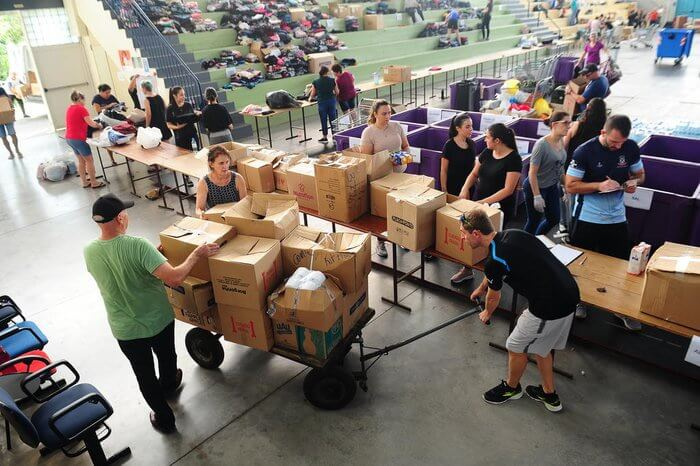

Quem Somos
O Instituto Esperança é uma ONG que atua na inclusão social e combate à fome, promovendo projetos comunitários em todo o Brasil.
Missão, Visão e Valores
- Missão: Promover solidariedade e inclusão social.
- Visão: Um Brasil com mais igualdade e oportunidades.
- Valores: Empatia, Transparência e Dedicação.
Contato
Email: contato@institutoesperanca.org
Telefone: (11) 99999-0000